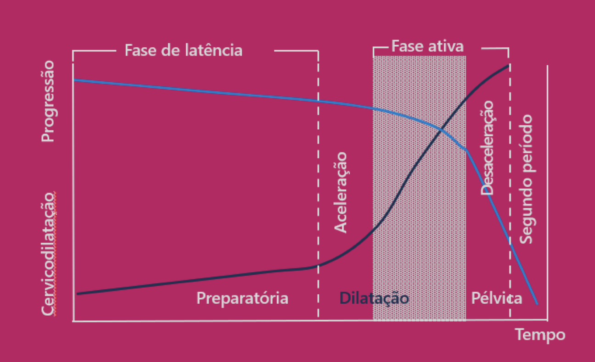
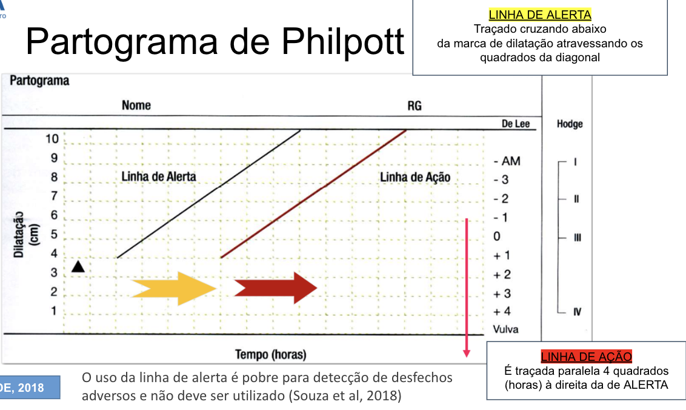
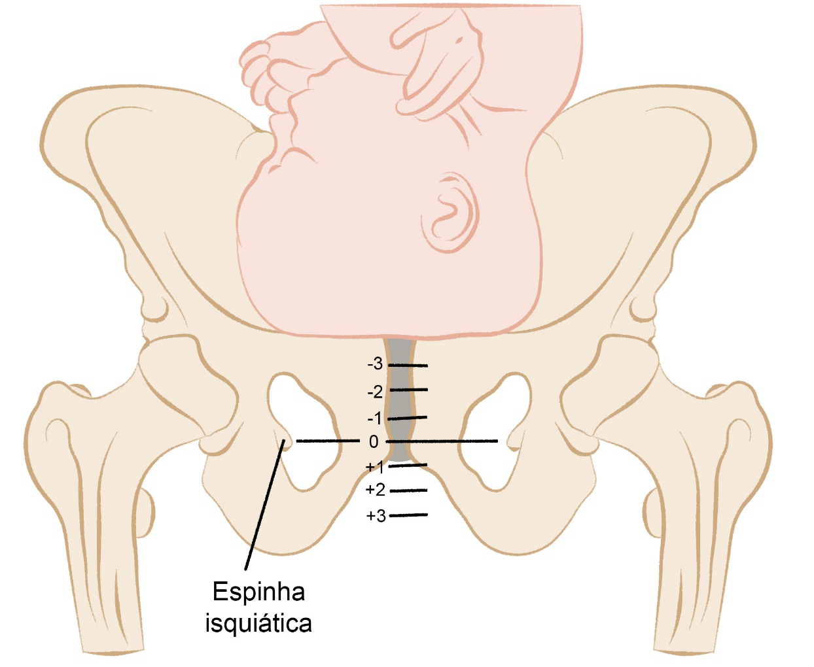
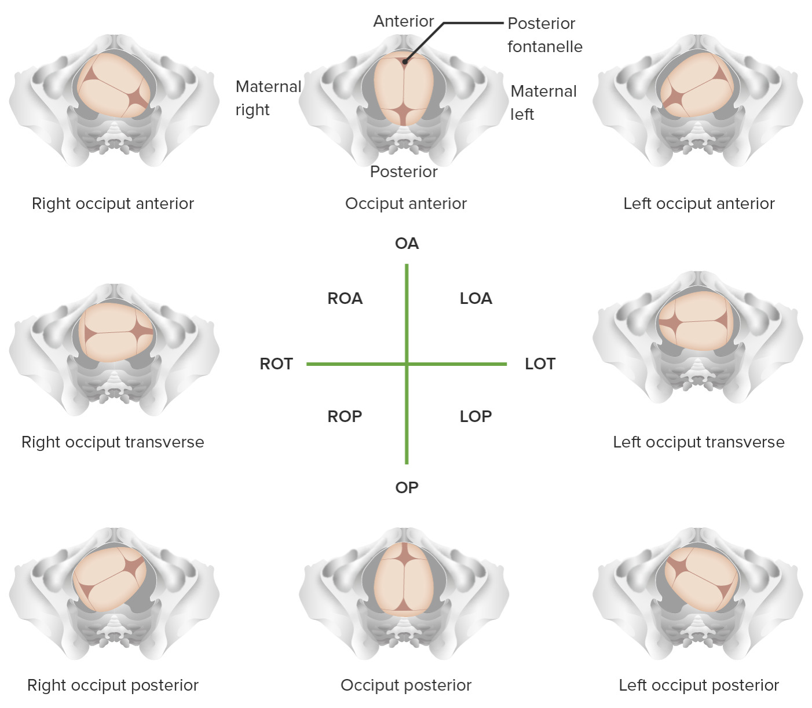
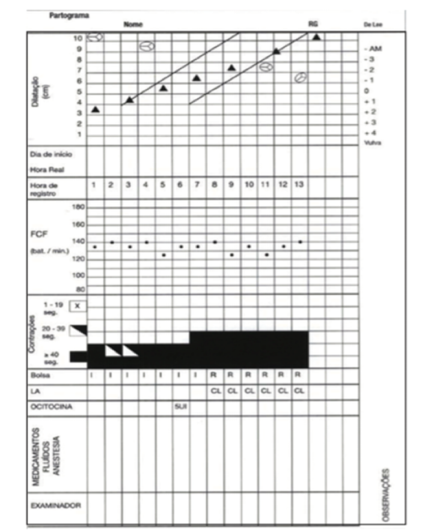
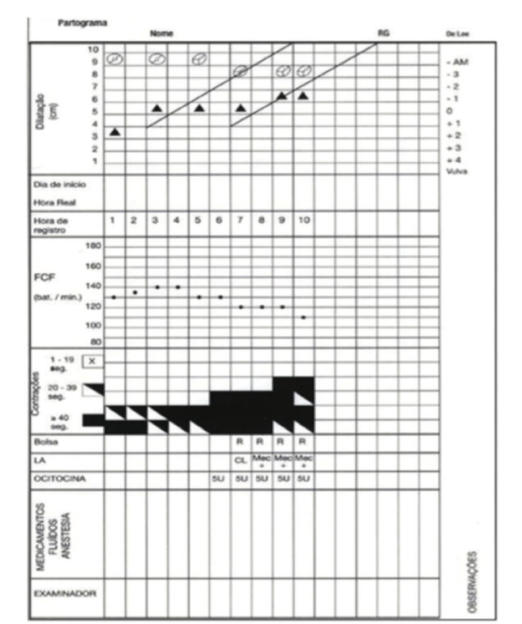
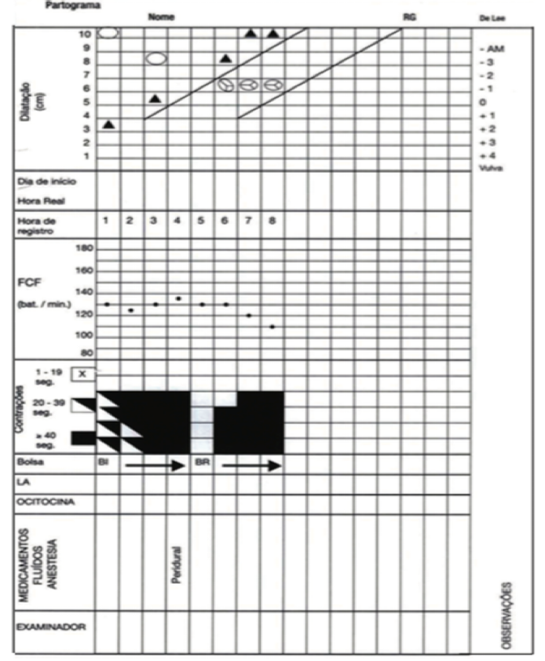
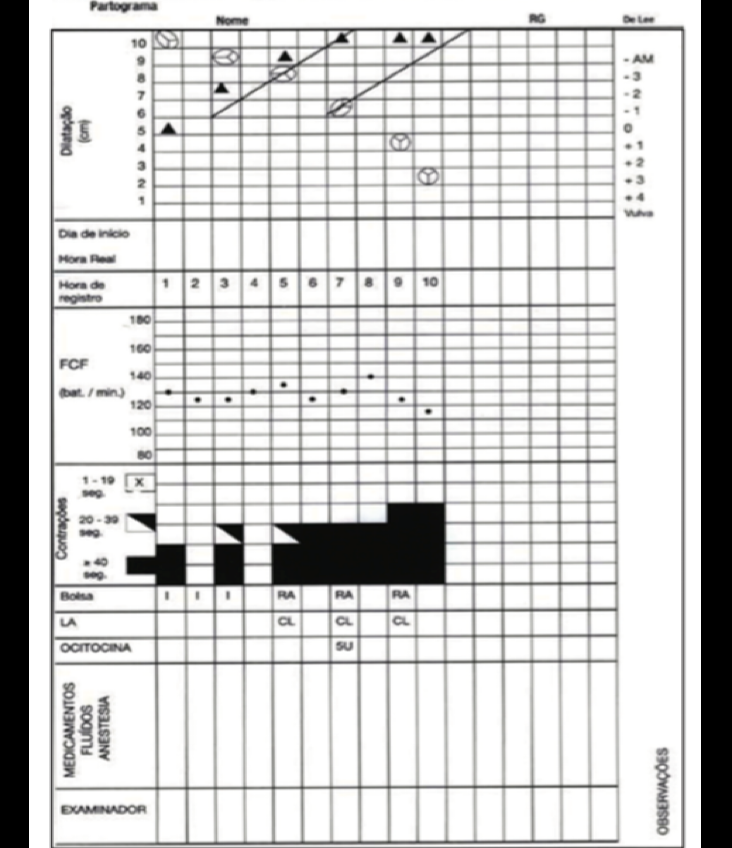

Partograma — Simulação de Estação OSCE
ESTAÇÃO 1: Fase Ativa Normal — Parto Eutócico





[PROFESSOR]: Primigesta, 25 anos, 39 semanas. Internada às 08h com colo 5 cm, apagamento 80%, apresentação cefálica, plano −1 de De Lee, OEA. DU: 3 contrações/10 min, duração 40 seg. BCF: 142 bpm. Membrana íntegra (I). Às 10h: 7 cm, plano 0. Às 12h: 9 cm, plano +1. Às 13h: total, plano +2.
Pergunta 1: O que você registra no partograma na abertura às 08h?
Resposta esperada: Dilatação (▲) em 5 cm, descida fetal (⏺) em −1 de De Lee, variedade OEA, DU 3/40''/10', BCF 142 bpm, membranas íntegras (I). A linha de alerta inicia 1 hora após a abertura; a linha de ação, 4 horas depois da linha de alerta.
Pergunta 2: Como você avalia a progressão do trabalho de parto?
Resposta esperada: Progressão normal — ≥1 cm/h na fase ativa. De 5→9 cm em 4h = 1 cm/h. Parto eutócico, não cruzou a linha de alerta. A fase ativa vai de 5 cm (internação/abertura) até dilatação total.
Pergunta 3: O que é plano +2 de De Lee e o que significa OEA?
Resposta esperada: Plano De Lee: zero = espinhas ciáticas; valores negativos = acima; positivos = abaixo. Plano +2 = cabeça 2 cm abaixo das espinhas — descida progressiva, período expulsivo próximo. OEA = occipital esquerdo anterior = posição mais favorável ao parto.
ESTAÇÃO 2: Parada Secundária de Dilatação — DPC

[PROFESSOR]: Primigesta, 28 anos, 38 semanas. Internada às 10h: 7 cm, plano −1, OET, LA claro. DU: 4/45''/10', BCF 138 bpm. Às 12h: 7 cm, plano −1. Às 14h: ainda 7 cm, plano −1, BCF 136 bpm, DU inalterada.
Pergunta 1: Qual o diagnóstico?
Resposta esperada: Parada secundária de dilatação — ausência de progressão em 2 toques consecutivos com intervalo ≥2 horas na presença de contrações eficazes (≥3/10 min). Causa mais provável: desproporção cefalopélvica (DPC), relativa ou absoluta.
Pergunta 2: Qual a conduta?
Resposta esperada: (1) Mobilização para posição vertical; (2) Alívio da dor (métodos não farmacológicos ou analgesia peridural); (3) Amniotomia se membranas íntegras; (4) Avaliar DU — se inadequada, ocitocina. Se DPC relativa → avaliar fórcipe de rotação. Se DPC absoluta → cesárea.
Pergunta 3: A variedade OET preocupa aqui? Por quê?
Resposta esperada: Sim. OET (occipital transverso) é posição de transição — deveria rotar para anterior durante a descida. Persistência de OET contribui para parada por dificuldade de encaixe e progressão fetal.
ESTAÇÃO 3: Sofrimento Fetal Agudo + Taquissistolia


[PROFESSOR]: Multípara (G3P2), 38 semanas. 15h: 6 cm, plano 0, OEA, LA claro, BCF 162 bpm, DU: 6 contrações/10 min, duração 60 seg. Às 15h30: BCF 98 bpm, LA tinto de mecônio (M). Está usando ocitocina.
Pergunta 1: O que indica BCF 162 e depois 98 bpm?
Resposta esperada: BCF >160 = taquicardia fetal (sinal precoce de sofrimento). BCF <110 = bradicardia (sinal grave, sofrimento fetal agudo). LA com mecônio confirma hipóxia — registro no partograma: letra "M".
Pergunta 2: O que é taquissistolia e qual o seu risco?
Resposta esperada: Taquissistolia = >5 contrações/10 min (normal: 2–5). Causa hiperestimulação uterina → reduz perfusão placentária → hipóxia fetal. A ocitocina em uso é a causa provável — deve ser suspensa imediatamente.
Pergunta 3: Qual a conduta imediata?
Resposta esperada: (1) Suspender ocitocina; (2) Decúbito lateral esquerdo; (3) Oxigênio à mãe; (4) Toques a cada 15 min no expulsivo; (5) Se BCF não recuperar → resolução imediata: fórcipe de alívio (se cabeça encaixada, plano ≥+2) ou cesárea de urgência.
Pontos que o professor vai checar
0/7 marcados
Tabela de Referência Rápida
| Parâmetro | Normal | Alarme |
|---|---|---|
| BCF | 110–160 bpm | <110 ou >160 |
| DU | 2–5 contrações/10 min, 30–50 seg | >5/10 min (taquissistolia) |
| Progressão dilatação | ≥1 cm/h na fase ativa | <1 cm/h = fase ativa prolongada |
| Parada secundária de dilatação | — | 2 toques sem progressão, ≥2h, DU eficaz |
| Parada secundária de descida | — | 2 toques sem progressão, ≥1h |
Símbolos Essenciais do Partograma
| Símbolo/Sigla | Significado |
|---|---|
| ▲ | Dilatação cervical (cm) |
| ⏺ | Altura da apresentação (plano De Lee) |
| OEA / ODA / OEP / ODP / OET / ODT | Variedade de posição fetal |
| I / C / M / S / A | Membranas: Íntegra / Clara / Mecônio / Sangue / Ausente |
| DU N°/seg/10' | Dinâmica uterina |
| Plano 0 | Espinhas ciáticas (referência) |
Fonte
- Gerado a partir de:
conteudo_partograma.md(Aula 04 — Partograma + Aula Prática Partograma) - Seções consultadas: distócias, linhas de alerta e ação, símbolos, DU, BCF, sofrimento fetal, parto precipitado
- Gaps identificados: Imagens do partograma preenchido estão como placeholders IMG no conteúdo extraído (slides não renderizados como texto)